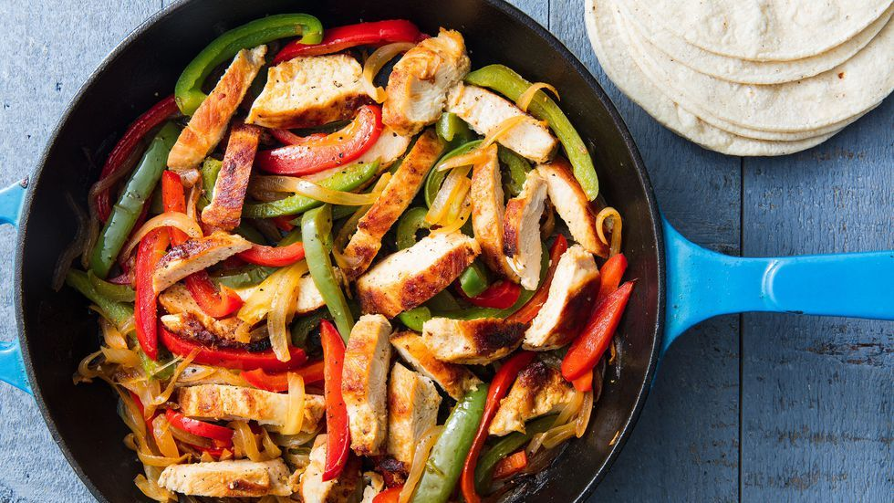

Fajitas

Description
Fajitas are a versatile Tex-Mex dish featuring marinated grilled or sautéed meat strips, vibrant peppers, and onions.
Served sizzling on a skillet with warm tortillas, they offer a customizable dining experience with toppings like guacamole and salsa.
Ingredients
For the Fajitas
- 1 kilogram of chicken thigh or skirt steak
- 1 onion slice thinly
- 2 capsicum, assorted colours, thinly sliced
- 12 corn tortillas
- canola oil spray
- salt
- 2 limes, quartered
For the Marinade
- Zest & juice of 1 orange
- Zest & juice of 2 limes
- 3 cloves of garlic, minced
- 1 jalapeño, minced
- 1/2 bunch cilantro
- Pinch of salt & pepper
- 1 teaspoon of cumin
- 1/2 teaspoon dried oregano
- 1 tablespoon Worcestershire sauce
Cooking Directions
- Whisk together all the ingredients for the marinade in a large bowl. Add the steak and toss until coated. Set aside for 40 minutes, or longer if you have the time.
- Heat a grill, grill pan, or iron skillet over high heat. Remove the meat from the marinade and wipe off excess liquid. Spray the cooking surface with a little bit of oil. Set in the meat and cook for 1 to 2 minutes per side, depending on the thickness of the steak. It should be medium-rare but have a good sear on it. Remove the steak and let rest for a few minutes.
- Spray the pan with a little more oil and then the vegetables. Add them in batches if they can't all fit in one layer. Cook for a minute or two per side, or until they have little blotches of black but are still crisp. Set aside.
- Thinly slice the meat across the grain. Toss it into a bowl with the peppers. Serve with warmed corn tortillas, lime wedges, and salt to taste.